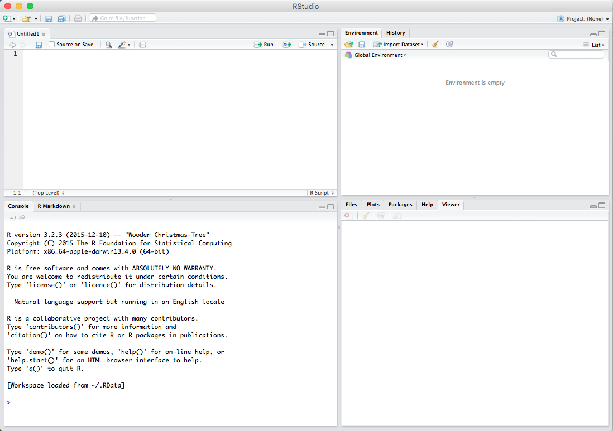
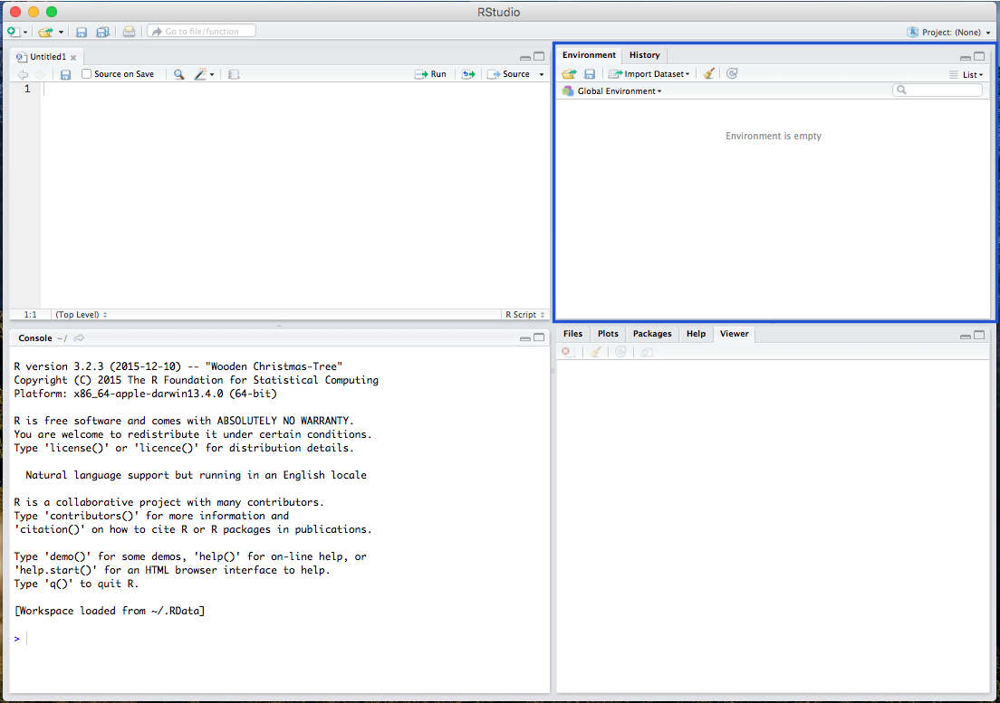
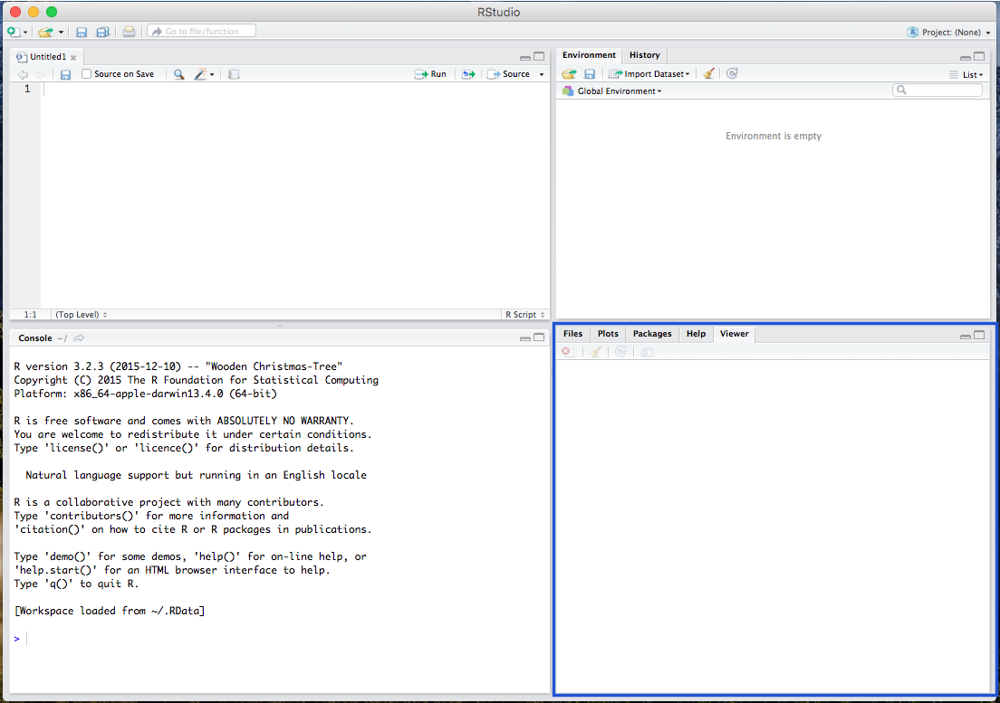

Getting Started with RStudio
What is RStudio like?
Open the RStudio program, which should be linked to R.

There are various windows within RStudio, including the Script window, where all your codes are viewable:

The R console window where you paste and run your code:

The Environment window, where your data and background processes are viewable:

And the Plot/Viewer window, where your output figures/diagrams, help information, and file viewer are located:

Getting Familiar with R
This will be different for you. To set your working directory, use
setwd("directory"), and
replace the word “directory” with the pathname of the folder
you want to be your directory (or under the Session
menu, select Set Working Directory, then select
Choose Directory and navigate to your desired
folder).
A Note on Commenting
Througout any script, you’ll also notice a line of text with a pound
sign (e.g. hashtag) preceding it, like this #this is a how to calculate a mean.
This is a comment, which is just a note to yourself.
Comments remind the user what the a bit of code is supposed to do.
Installing Packages and Loading as Libraries
Because R is and open-source statistical program, many of its
functions are built by programmers in the form of
packages or libraries. Most of these
are published and hosted on the Comprehensive R Archive Network
(CRAN) website. We will be using 3 main packages in this exercise:
the MASS, the psych, and the car.
Install the packages from the repository (copy and paste the lines below)
Load the packages as libraries
Working with Data
The Assignment Operator for Creating Objects
The great thing about R is that, because it is an object-oriented
programming language, you can assign object names to
any calculation or data set. This creates a working copy of the
calculation (or data set) in R’s memory that you can run operations on.
To do so, you simply must assign an object name using a left
arrow (the assignment operator) like this: new_object <- dataset. For
example, we could run…
… and then run…
## [1] 5… which gives us the same result, but now we can run manipulations on the new object (or variable) x.
Creating a List as an Object
Sometimes, for quick analyses, you may need to read in a list of
numbers (in your working Environment). To read in a list, you use the
concatenate c function. You
can create a list by replacing the word “LIST” from this with the actual
list: c(LIST).
To create an object out of a list of numbers, we could do the following…
Now that list is a
useable object, we can run manipulations and univariate statistics on it
(described below).
In addition, you can use the c or concatenate function to
manually input columns of data (variables) and merge
them into one data frame.
Let’s say someone sent you the following image:

We could insert the data, one variable at a time, each as a new list object:
race <- c("black","white","latinx","white","latinx","black","other")
income <- c(57000,85500,88000,43000,45000,91500,79000)
party <- c("democrat","democrat","independent","republican","democrat","democrat","independent")Next, we can view the lists by calling the object names:
## [1] "black" "white" "latinx" "white" "latinx" "black" "other"## [1] 57000 85500 88000 43000 45000 91500 79000## [1] "democrat" "democrat" "independent" "republican" "democrat" "democrat"
## [7] "independent"To merge these objects together, we use the cbind (or column bind) function –
which converts the list into a column (variable). However, the best or
more appropriate way is to merge objects into a data frame, using the
data.frame function.
And the data should now be presented as a data frame:
## race income party
## 1 black 57000 democrat
## 2 white 85500 democrat
## 3 latinx 88000 independent
## 4 white 43000 republican
## 5 latinx 45000 democrat
## 6 black 91500 democrat
## 7 other 79000 independentRemoving Objects from your Environment
Many times, we’ll be working with several objects, and ultimately
decide that some of them are no longer needed. In this case, we would
want to tidy up our environment by removing an object. To do so, we must
use the rm function. You
can do it like this, changing the word “OBJECT” to the name of the
object that you’re trying to remove from the R environment: rm(OBJECT).
Reading in CSV Data Sets
Many data sets that researchers work with come in the form of a CSV file. A CSV (Comma Separated Values) file is just a Microsoft Excel spreadsheet (with rows as observations and columns as variables), that is converted into CSV format.
A CSV file must be “read” into the R environment for you to use it.
To do so, you’ll have to call in the CSV file (data set) with one of R’s
functions: the read.csv
function. Additionally, you will have to give the CSV a new object name
(using the assignment operator <-), so we can place
it in our working environment. You can do it like this, changing the
word “PATHNAME” to the pathname to the csv file you’re reading into the
R environment: data1 <- read.csv("PATHNAME.csv", header=TRUE, sep=",").
Working with Stock Data Sets in R
Fortunately, nearly every package in R comes with a data set that R
users can use. To see which stock data sets are installed in your
version of R, use the data() function. The
MASS package, for example,
comes with a great data set on car manufacturers called mtcars. #
Getting Information about/Codebook for Stock Data Sets in R
Before loading the data set, you might want to know more about it. In
order to get information about a data set (including the data set
description, the size of the data set, and variable names and
descriptions), you need to ask R. To do so, you need use the
??
(double-question-mark) function as such…
Working with Stock Data Sets in R
To use the mtcars data
set, you must call it. Calling the data will load it into your console
window. To call a stock data set, just type in the name of the data set
(Note: The data set you’re calling must come from a package that is
already LOADED into your R session). Because the MASS package is
already loaded, we can call our mtcars data set
as such…
## mpg cyl disp hp drat wt qsec vs am gear carb
## Mazda RX4 21.0 6 160.0 110 3.90 2.620 16.46 0 1 4 4
## Mazda RX4 Wag 21.0 6 160.0 110 3.90 2.875 17.02 0 1 4 4
## Datsun 710 22.8 4 108.0 93 3.85 2.320 18.61 1 1 4 1
## Hornet 4 Drive 21.4 6 258.0 110 3.08 3.215 19.44 1 0 3 1
## Hornet Sportabout 18.7 8 360.0 175 3.15 3.440 17.02 0 0 3 2
## Valiant 18.1 6 225.0 105 2.76 3.460 20.22 1 0 3 1
## Duster 360 14.3 8 360.0 245 3.21 3.570 15.84 0 0 3 4
## Merc 240D 24.4 4 146.7 62 3.69 3.190 20.00 1 0 4 2
## Merc 230 22.8 4 140.8 95 3.92 3.150 22.90 1 0 4 2
## Merc 280 19.2 6 167.6 123 3.92 3.440 18.30 1 0 4 4
## Merc 280C 17.8 6 167.6 123 3.92 3.440 18.90 1 0 4 4
## Merc 450SE 16.4 8 275.8 180 3.07 4.070 17.40 0 0 3 3
## Merc 450SL 17.3 8 275.8 180 3.07 3.730 17.60 0 0 3 3
## Merc 450SLC 15.2 8 275.8 180 3.07 3.780 18.00 0 0 3 3
## Cadillac Fleetwood 10.4 8 472.0 205 2.93 5.250 17.98 0 0 3 4
## Lincoln Continental 10.4 8 460.0 215 3.00 5.424 17.82 0 0 3 4
## Chrysler Imperial 14.7 8 440.0 230 3.23 5.345 17.42 0 0 3 4
## Fiat 128 32.4 4 78.7 66 4.08 2.200 19.47 1 1 4 1
## Honda Civic 30.4 4 75.7 52 4.93 1.615 18.52 1 1 4 2
## Toyota Corolla 33.9 4 71.1 65 4.22 1.835 19.90 1 1 4 1
## Toyota Corona 21.5 4 120.1 97 3.70 2.465 20.01 1 0 3 1
## Dodge Challenger 15.5 8 318.0 150 2.76 3.520 16.87 0 0 3 2
## AMC Javelin 15.2 8 304.0 150 3.15 3.435 17.30 0 0 3 2
## Camaro Z28 13.3 8 350.0 245 3.73 3.840 15.41 0 0 3 4
## Pontiac Firebird 19.2 8 400.0 175 3.08 3.845 17.05 0 0 3 2
## Fiat X1-9 27.3 4 79.0 66 4.08 1.935 18.90 1 1 4 1
## Porsche 914-2 26.0 4 120.3 91 4.43 2.140 16.70 0 1 5 2
## Lotus Europa 30.4 4 95.1 113 3.77 1.513 16.90 1 1 5 2
## Ford Pantera L 15.8 8 351.0 264 4.22 3.170 14.50 0 1 5 4
## Ferrari Dino 19.7 6 145.0 175 3.62 2.770 15.50 0 1 5 6
## Maserati Bora 15.0 8 301.0 335 3.54 3.570 14.60 0 1 5 8
## Volvo 142E 21.4 4 121.0 109 4.11 2.780 18.60 1 1 4 2While this is great, and the data set is loaded into your console
window, you will need a local copy to run operations on. To create a
local copy (an object) so that you can run manipulations on the mtcars data, you should create a
new object, like this:
Like above, you can now call data1, and it will load the same
data set into your console window (not shown here). In addition, in
RStudio, after you give the data a new name (converting it to a usable
object), you can view the data in your upper-right
Environment window.
Calling information for a Variable
To call a specific variable or column within the data set,
you simply use the dollar sign operator $, in the form of data$variable. To call the mpg variable from the new data1 data set, we use the
following.
## [1] 21.0 21.0 22.8 21.4 18.7 18.1 14.3 24.4 22.8 19.2 17.8 16.4 17.3 15.2 10.4 10.4 14.7
## [18] 32.4 30.4 33.9 21.5 15.5 15.2 13.3 19.2 27.3 26.0 30.4 15.8 19.7 15.0 21.4Recoding Values within a Variable
If we wanted to recode values of a variable, we could do so using the
recode function within the
car package. Using the recode function, we need the name of
the new variable we want to place in the data set, the name of the old
variable we want to recode, and the recoded values.
Let’s say we wanted to recode the cyl variable.
## [1] 6 4 8As can be seen, it currently has 3 unique values: 4, 6, and 8, which represent cars that are 4-cylinder, 6-cylinder, and 8-cylinder vehicles. Let’s recode it into a binary variable (0,1) representing whether or not the car is a gas guzzler.
## Warning: Unreplaced values treated as NA as `.x` is not compatible.
## Please specify replacements exhaustively or supply `.default`.As can be seen above, I’ve recoded the cyl variable into
a new variable called gas_guzzler. As we can see, any
observation (car) that is a 4-cylinder (has a value of 4 on the
cyl variable) or a 6-cylinder (has a value of 6 on the
cyl variable), was recoded as 0 on the new
gas_guzzler variable. This means it is not a gas
guzzler. Additionally, any observation (car) that is an 8-cylinder (has
a value of 8 on the cyl variable) was recoded as 1 on the
new gas_guzzler variable, meaning that it is a gas
guzzler.
Importantly, any additional values that exist in the cyl
variable, that you did not specify with a recode value, will be given an
NA (missing) value.
## [1] NAAs seen above, we’ve successfully recoded this variable, from 3
unique values in the cyl variable, to 2 unique values in
the gas_guzzler variable.
Additionally, you can use several different calls within the recode
function. Including the: concatenate (c()) function to
create a list of values to recode, the lo: function (where
you tell R to recode from the lowest value to whatever value follows the
colon), the :hi function (where you tell R to recode from
whatever value precedes the colon to the highest value), and the
else function to recode everything else you missed as a
specific value (rather than an NA missing value).
data1$type <- recode(data1$cyl, "c(4,6) = 0; 8 = 1")
data1$type2 <- recode(data1$cyl, "lo:6 = 0; 8:hi = 1")
data1$type3 <- recode(data1$cyl, "4 = 0; 6 = 0; 8 = 1; else = 1")Additional R Resources
R for Data Science
Dr. Matt
Blackwell’s Advanced Quant Methods Course in Political Science
Dr. Chris Bail’s Data &
Society Course
Summer Institute in Computational Social Science
- [ Github
Repo of 2020 Materials, 2019 Materials, 2020
Videos (with Links) ]